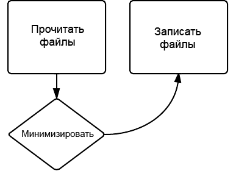
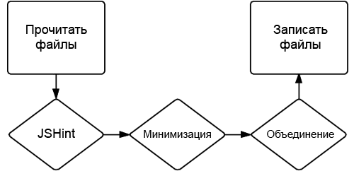

Установка и использование Gulp
Установка Gulp
Установка Gulp довольно простая. Для начала установите пакет Gulp глобально:
npm install -g gulpЗатем установите его в свой проект:
npm install --save-dev gulpИспользование Gulp
Давайте создадим задачу Gulp для минимизации одного из наших файлов JavaScript. Создайте файл с именем gulpfile.js. В нём будут определяться ваши задачи, которые запускаются с помощью команды gulp.
Добавьте следующие команды в ваш файл gulpfile.js:
var gulp = require('gulp'),
uglify = require('gulp-uglify');
gulp.task('minify', function () {
gulp.src('js/app.js')
.pipe(uglify())
.pipe(gulp.dest('build'))
});Установите gulp-uglify через npm выполнив npm install --save-dev gulp-uglify, а затем запустите задачу через gulp minify. Предположим, у вас есть файл с именем app.js в папке js, новый app.js будет создан в папке build и содержать сжатую версию js/app.js.
Что на самом деле здесь происходит?
Мы делаем несколько вещей в нашем файле gulpfile.js. Вначале мы загружаем модули gulp и gulp-uglify:
var gulp = require('gulp'),
uglify = require('gulp-uglify');Затем определяем задачу с именем minify, которая при запуске вызывает функцию, заданную в качестве второго аргумента:
gulp.task('minify', function () {
});В конце, и это самое сложное, мы определяем, что наша задача должна делать:
gulp.src('js/app.js')
.pipe(uglify())
.pipe(gulp.dest('build'))Если вы не знакомы с потоками, а большинство фронтенд-разработчиков с ними не знакомы, то код выше ничего вам не скажет.
Потоки
Потоки позволяют пройти некоторым данным через ряд, как правило, небольших функций, которые модифицируют данные, а затем передают их следующей функции.
В приведённом выше примере функция gulp.src() получает строку, которая соответствует файлу или набору файлов, и создаёт поток объектов представляющих эти файлы. Затем они переходят (или перетекают) в функцию uglify(), которая принимает объекты файлов и возвращает новые объекты файлов с минимизированным исходником. Этот результат затем перетекает в функцию gulp.dest(), которая сохраняет изменённые файлы.
Вот что происходит в виде схемы:

Когда есть только одна задача, функция ничего не делает. Тем не менее, рассмотрим следующий код:
gulp.task('js', function () {
return gulp.src('js/*.js')
.pipe(jshint())
.pipe(jshint.reporter('default'))
.pipe(uglify())
.pipe(concat('app.js'))
.pipe(gulp.dest('build'));
});Чтобы запустить это самостоятельно, установите gulp, gulp-jshint, gulp-uglify и gulp-concat.
Эта задача берёт все файлы соответствующие js/*.js (иными словами все файлы JavaScript из папки js), запускает для них JSHint, выводит отчёт, минимизирует каждый файл, а затем объединяет их, сохраняя их в build/app.js. В виде схемы:

Если вы знакомы с Grunt, то заметите, что это довольно сильно отличается от того, как работает Grunt. Grunt не использует потоки. Вместо этого он берёт файлы, запускает одну задачу для каждого файла и сохраняет в новые файлы, повторяя весь процесс для каждой задачи. В результате множества обращений к файловой системе, Grunt работает медленнее, чем Gulp.
Для лучшего понимания потоков прочтите Stream Handbook.
gulp.src()
Функция gulp.src() берёт один или несколько файлов или массив и возвращает поток, который может быть передан в плагины.
Gulp использует node-glob для получения указанных файлов. Проще всего объяснить на примерах:
- js/app.js
Соответствует определённому файлу. - js/*.js
Соответствует всем файлам, заканчивающихся на .js в папке js. - js/**/*.js
Соответствует всем файлам с расширением .js в папке js и всех вложенных папках. - !js/app.js
Исключает js/app.js из соответствия, что полезно если вы желаете выбрать все файлы в папке за исключением определённого файла. - *.+(js|css)
Соответствует всем файлам, заканчивающихся на .js или .css.
Другие функции также доступны, но в Gulp они обычно не применяются. Посмотрите документацию Minimatch ради подробностей.
Предположим, у нас есть папка с именем js, содержащая файлы JavaScript, некоторые минимизированы, а некоторые нет. Мы хотим создать задачу по минимизации ещё не уменьшенных файлов. Чтобы сделать это, мы выбираем все файлы JavaScript в папке, за исключением всех файлов, оканчивающиеся на .min.js:
gulp.src(['js/**/*.js', '!js/**/*.min.js'])Определение задач
Чтобы определить задачу используйте функцию gulp.task(). Для простой задачи эта функция принимает два параметра: имя задачи и функция для запуска.
gulp.task('greet', function () {
console.log('Здравствуй, мир!');
});Запуск gulp greet выведет «Здравствуй, мир» в консоли.
Задача также может быть списком других задач. Предположим, мы хотим определить задачу build, которая выполняет три других задачи: css, js и imgs. Мы можем сделать это, указав вместо функции массив с задачами:
gulp.task('build', ['css', 'js', 'imgs']);Они будут запускаться асинхронно, так что вы не можете предполагать, что когда задача css завершится, то запустится задача js — на деле, это, скорее всего, не произойдёт. Чтобы убедиться, что задача завершила работу перед запуском другой задачи, вы можете указать зависимостей путём объединени массива задач с функцией. Например, чтобы определить задачу css, которая перед запуском проверит, что задача greet завершена, вы можете сделать так:
gulp.task('css', ['greet'], function () {
// Делаем что-то с CSS
});Теперь, когда вы запустите задачу css, Gulp выполнит задачу greet, подождёт, пока она окончится, а затем вызовет указанную функцию.
Задача по умолчанию
Вы можете определить задачу default, которая выполняется, когда вы просто запускаете gulp. Вы можете сделать это, определив задачу с именем default.
gulp.task('default', function () {
// Задача по умолчанию
});Плагины
Вместе с Gulp вы можете использовать ряд плагинов — более 600 на деле. Вы найдёте их список на странице плагинов, либо путём поиска gulpplugin в npm. Некоторые плагины помечены «gulpfriendly»; это не плагины, но они предназначены для работы с Gulp. Учтите, что при поиске непосредственно в npm, вы не увидите плагины из чёрного списка (прокрутите страницу с плагинами вниз и увидите больше).
Большинство плагинов довольно просты в использовании, имеют хорошую документацию и запускаются аналогичным образом (через поток файловых объектов). Они, как правило, модифицируют файлы (хотя некоторые, вроде валидаторов, нет) и возвращают новые файлы, которые передаются в следующий плагин.
Давайте расширим уже упомянутую задачу js:
var gulp = require('gulp'),
jshint = require('gulp-jshint'),
uglify = require('gulp-uglify'),
concat = require('gulp-concat');
gulp.task('js', function () {
return gulp.src('js/*.js')
.pipe(jshint())
.pipe(jshint.reporter('default'))
.pipe(uglify())
.pipe(concat('app.js'))
.pipe(gulp.dest('build'));
});Мы используем три плагина: gulp-jshint, gulp-uglify и gulp-concat. Вы можете увидеть в файлах README для плагинов, что их довольно легко использовать. Доступны некоторые настройки, но по умолчанию, как правило, всё хорошо.
Вы, возможно, заметили, что плагин JSHint вызывается дважды. Потому что первая строка вызывает JSHint для файлов, которые только присоединяют свойство jshint к файловым объектам без какого-либо вывода. Вы можете прочитать свойство jshint самостоятельно или передать его в jshint.reporter по умолчанию или в другой reporter, такой как jshint-stylish.
Два других плагина понятнее: функция uglify() минимизирует код, а функция concat('app.js') объединяет все файлы в один с именем app.js.
gulp-load-plugin
Модуль, который я нахожу весьма полезным называется gulp-load-plugins, он автоматически загружает любые плагины Gulp из файла package.json и присоединяет их к объекту. Основное применение следующее:
var gulpLoadPlugins = require('gulp-load-plugins'),
plugins = gulpLoadPlugins();Вы можете записать всё в одну строку (var plugins = require('gulp-load-plugins')();), но я не большой поклонник однострочного вызова require.
После запуска этого кода объект plugins будет содержать ваши плагины с именами в CamelCase-стиле (к примеру, gulp-ruby-sass будет загружен как plugins.rubySass). Вы можете использовать их обычным путём. Например, наша задача js сократится так:
var gulp = require('gulp'),
gulpLoadPlugins = require('gulp-load-plugins'),
plugins = gulpLoadPlugins();
gulp.task('js', function () {
return gulp.src('js/*.js')
.pipe(plugins.jshint())
.pipe(plugins.jshint.reporter('default'))
.pipe(plugins.uglify())
.pipe(plugins.concat('app.js'))
.pipe(gulp.dest('build'));
});К этому прилагается файл package.json, который содержит нечто похожее:
{
"devDependencies": {
"gulp-concat": "~2.2.0",
"gulp-uglify": "~0.2.1",
"gulp-jshint": "~1.5.1",
"gulp": "~3.5.6"
}
}Данный пример на самом деле не намного короче. Однако для объёмных и сложных Gulp-файлов, это сократит блок с загрузкой файлов до одной или двух строк.
Версия 0.4.0 gulp-load-plugins выпущенная в начале марта добавила отложенную загрузку плагина, которая улучшает производительность. Плагины не загружаются, пока их не вызовем, это значит, что вам не придётся беспокоиться о неиспользованных плагинах в package.json влияющих на производительность (хотя их, вероятно, следует убрать в любом случае). Другими словами, если вы запустите задачу, которая требует только два плагина, она не станет загружать все плагины, которые необходимы для других задач.
Отслеживание файлов
Gulp имеет возможность следить за изменением файлов и выполнять задачу или задачи при обнаружении изменений. Эта функция удивительно полезна (для меня, наверное, одна из самых полезных в Gulp). Вы можете сохранить Less-файл, а Gulp превратит его в CSS и обновит браузер без каких-либо действий с вашей стороны.
Для слежения за файлом или файлами используйте функцию gulp.watch(), которая принимает шаблон файлов или их массив (такой как gulp.src()), либо массив задач для их запуска или выполнения функции обратного вызова.
Предположим, что у нас есть задача build, она превращает наши файлы шаблонов в HTML и мы хотим определить задачу watch, которая отслеживает изменение шаблонов и запускает задачу для преобразования их в HTML. Мы можем использовать функцию watch следующим образом:
gulp.task('watch', function () {
gulp.watch('templates/*.tmpl.html', ['build']);
});Теперь при изменении файла шаблона будет запущена задача build, которая создаст HTML.
Вы также можете указать для watch функцию обратного вызова вместо массива задач. В этом случае функция получает объект event содержащий информацию о событии, которое вызвало функцию:
gulp.watch('templates/*.tmpl.html', function (event) {
console.log('Event type: ' + event.type); // добавлено, изменено или удалено
console.log('Event path: ' + event.path); // путь к файлу
});Другой отличительной особенностью gulp.watch() является то, что она возвращает watcher. Используйте его для прослушивания дополнительных событий или для добавления файлов в watch. Например, чтобы одновременно запустить список задач и вызвать функцию, вы можете добавить слушателя в событие change при возвращении watcher:
var watcher = gulp.watch('templates/*.tmpl.html', ['build']);
watcher.on('change', function (event) {
console.log('Event type: ' + event.type); // добавлено, изменено или удалено
console.log('Event path: ' + event.path); // путь к файлу
});В дополнение к событию change вы можете прослушивать ряд других событий:
- end
Срабатывает, когда watcher завершается (это означает, что задачи и функции обратного вызова не будут больше вызываться при изменении файлов). - error
Срабатывает, когда происходит ошибка. - ready
Срабатывает, когда файлы были найдены и готовы к отслеживанию. - nomatch
Срабатывает, когда запросу не соответствует ни один файл.
Объект watcher также содержит некоторые методы, которые можно вызывать:
- watcher.end()
Останавливает watcher (при этом задачи или функции обратных вызовов не будут больше вызываться). - watcher.files()
Возвращает список файлов за которыми следит watcher. - watcher.add(glob)
Добавляет файлы в watcher, которые соответствуют указанному шаблону glob (также принимает необязательную функцию обратного вызова в качестве второго аргумента). - watcher.remove(filepath)
Удаляет определённый файл из watcher.

Все материалы сайта доступны по лицензии Creative Commons «Attribution-NonCommercial» («Атрибуция — Некоммерческое использование») 4.0 Всемирная, если не указано иное.